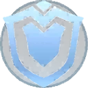
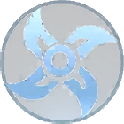
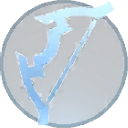
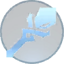

Tank
Tanks are the heroes that can take a lot of damage and protect their teammates. They are usually the first to engage in a fight and the last to leave. Tanks are essential in team fights as they can absorb a lot of damage and protect their teammates from harm.
Fighter
Fighters are the heroes that can deal a lot of damage and take a lot of damage. They are usually the ones that engage in fights and deal damage to the enemy team. Fighters are essential in team fights as they can deal a lot of damage and take out the enemy team's damage .
Assassin
An assassin is an agile hero that specializes in killing or disabling roaming targets picking them of as they try to replenish HP. Focused on infiltration, deception, and mobility, assassins are opportunistic hunters who find favorable moments jumping.
Marksman
Marksman are ranged heroes whose power is almost entirely based on their basic attacks: by using their reach to land massive continuous damage from a distance, marksmans are capable of taking down even the most difficult opponents when positioned behind the safety of their team, and perform better at securing objectives such as the Lord and turrets.
Mage
A magician (abbreviated as mage) is a hero with a longer range, ability-based area of effect damage, and crowd control that they may utilize to strike from a distance. Mages primarily focus on magic skills that deals magic damage, usually burst damage, and as a consequence, they spend a lot of gold on equipment that allows them to do more damage and have shorter skill cooldowns.
Support
The SupSupport Icon port role is to aid and help protect your allies in any situation. Your role is is to shield or heal them, to tanking some damage or sacrificing yourself to keep others alive. You are often giving up the glorious kills in the game to support others, but in the end its usually the support to secure the true MVP award. Support heroes usually lane with the marksman in top lane or at mid lane in order to be able to travel quickly where they are needed